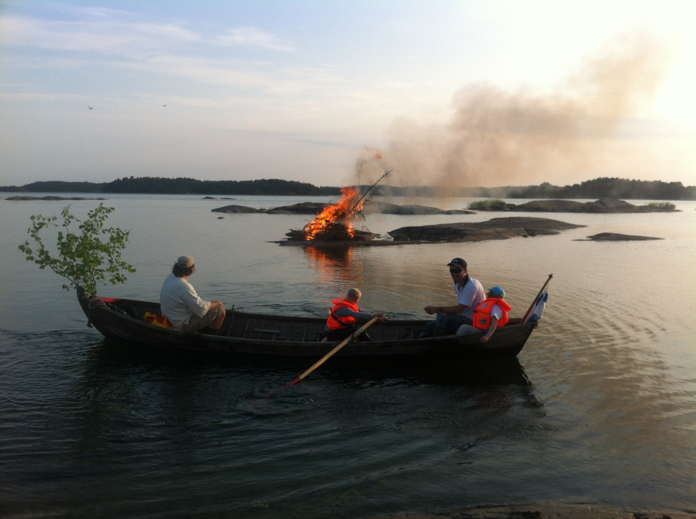
We spend summers in the Archipelago Sea
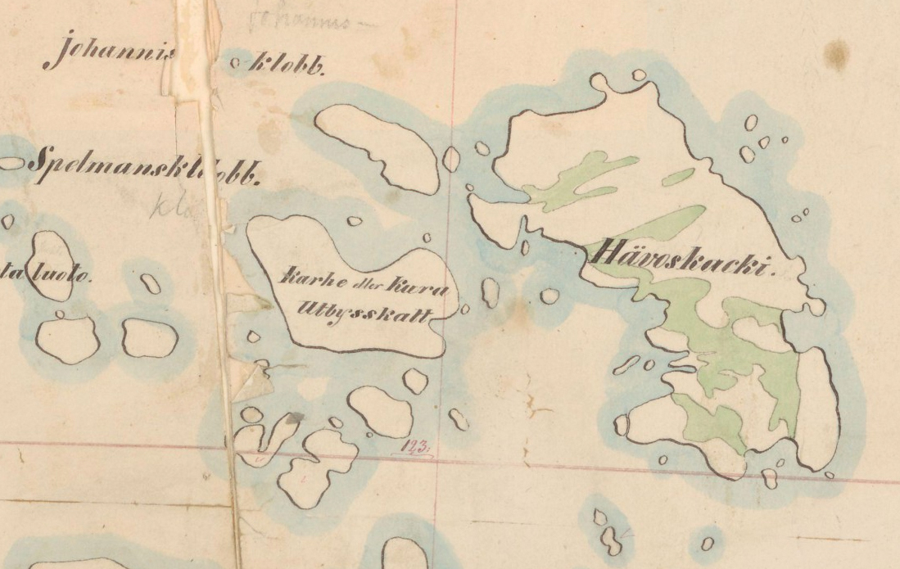on Horse-shit Island

between Finland and Sweden

Russians fought wars in the area over the course of history

Locals made up fake names for places to trick them
The neighboring islands are called Filth and Dunno
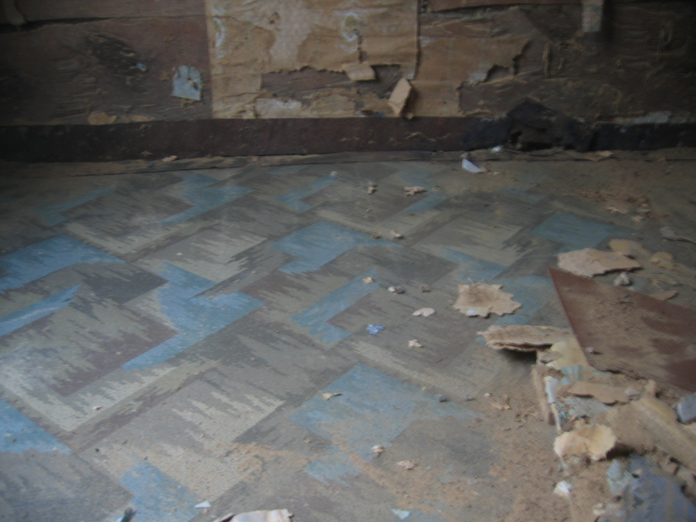We tore down old wallpaper in the house

and found a love letter from 1880
Käraste Emelie
Beloved Emily
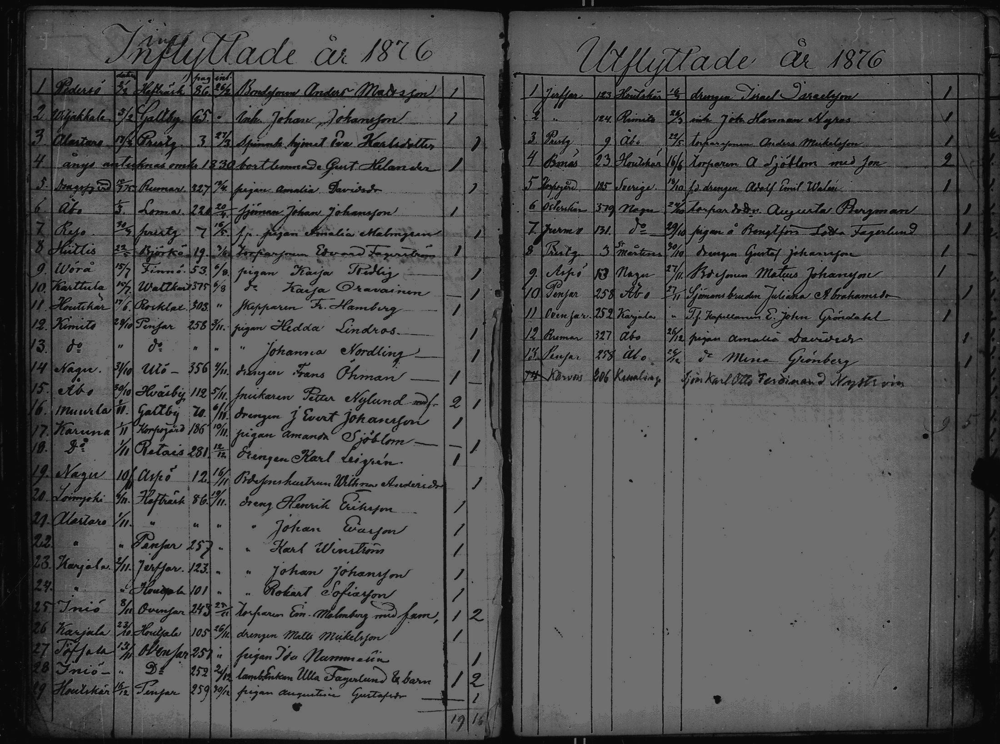Church records revealed Emilia had moved on the island in 1876 with her parents
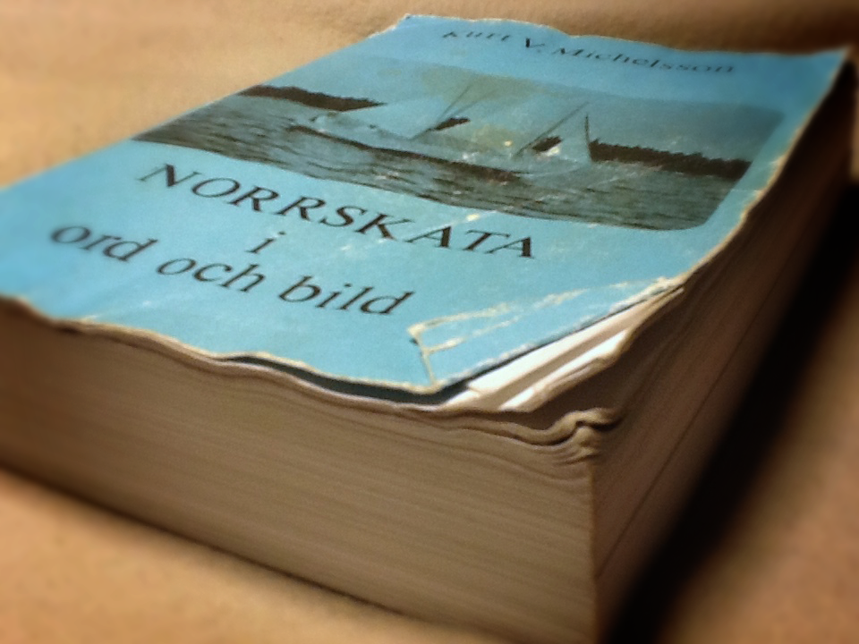A network of marrying between islands started to unfold
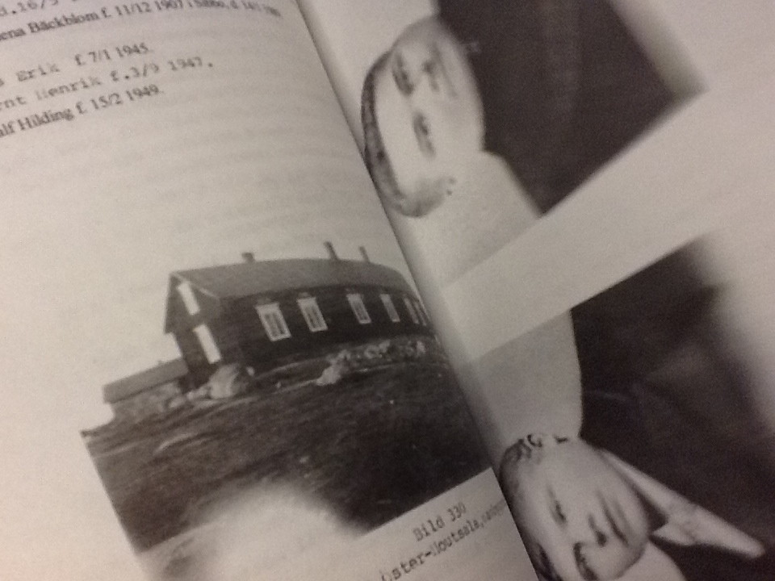
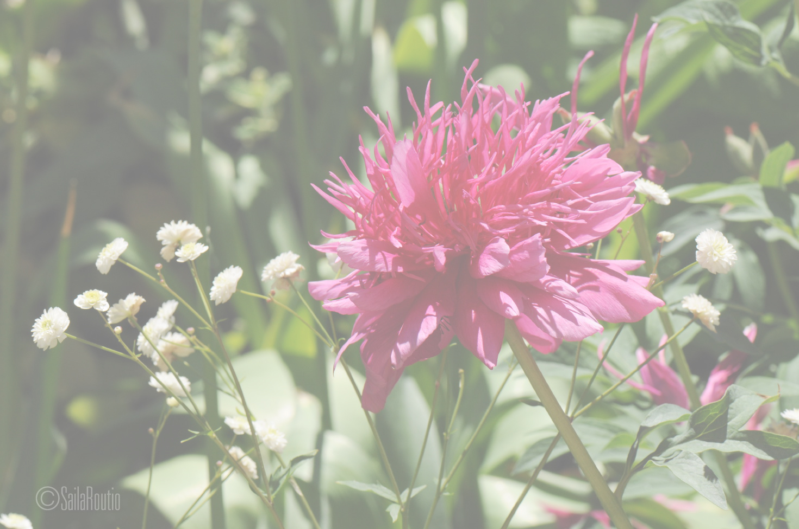Paeonia humilis flore plena
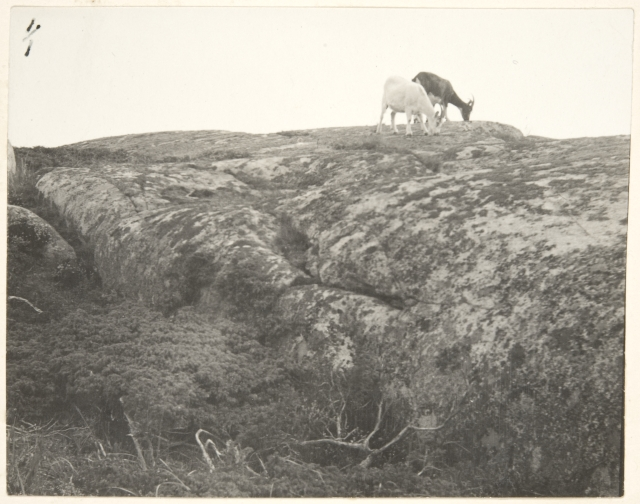Hardship

Immigration
Gentrification
Could we dig this deeper...?
Wikimedia Finland has started a project with old maps
 Wikimaps helps upload old maps to Wikimedia Commons
Wikimaps helps upload old maps to Wikimedia CommonsAnyone can georeference any map on Wikimedia Commons
There are many, many tools that could be added
to place images

to use aerial imagery
to chart place name changes
But could it be more fun...?
We team up with archives to find maps
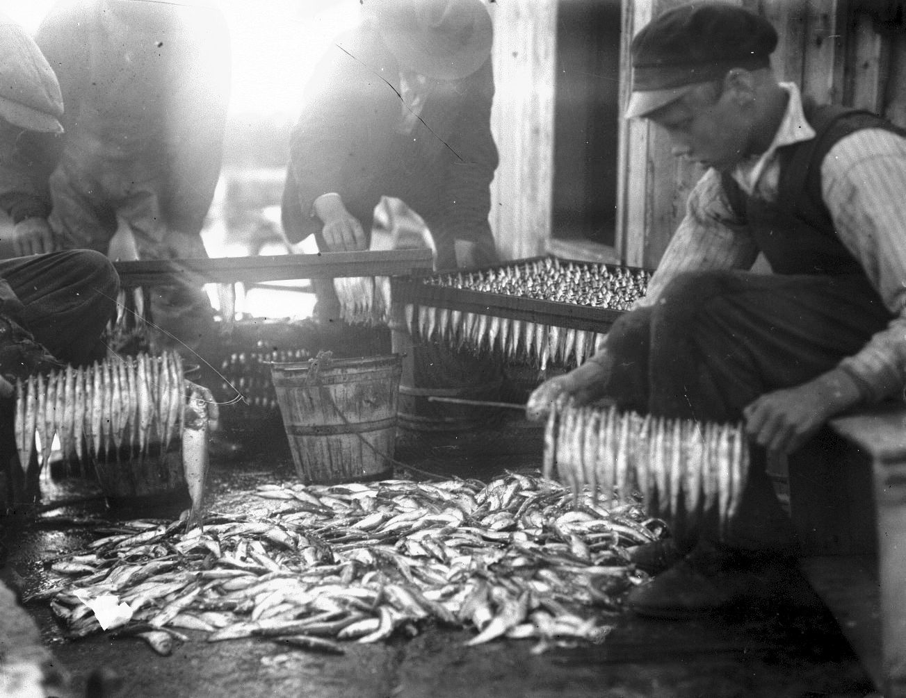museums to find images
Invite mappers, historians, wikimedians...
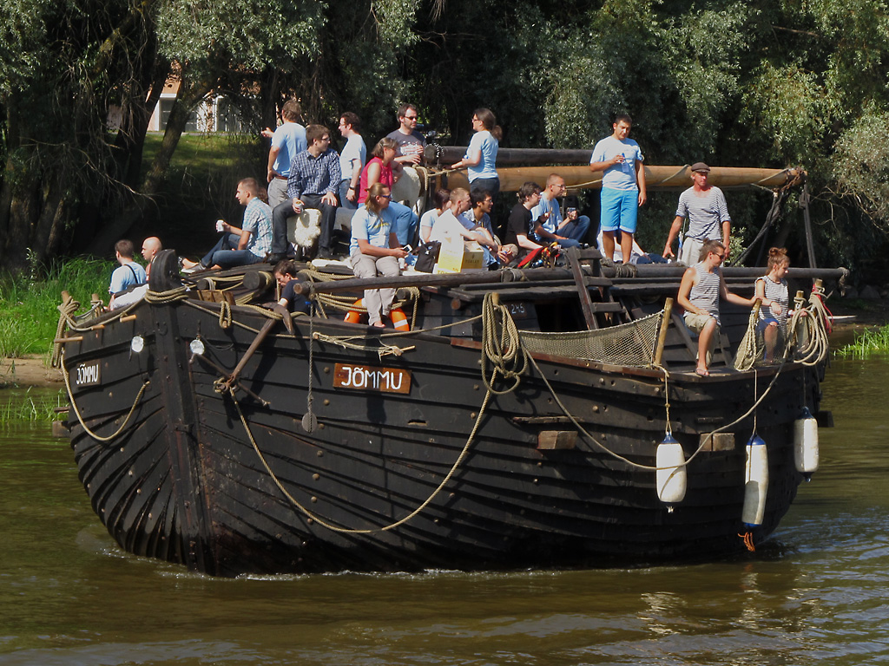
to join
the expedition
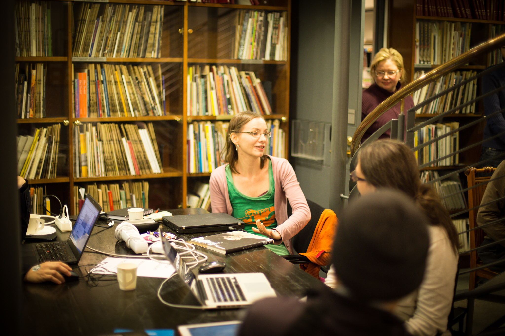an editathon
.png)
a field trip
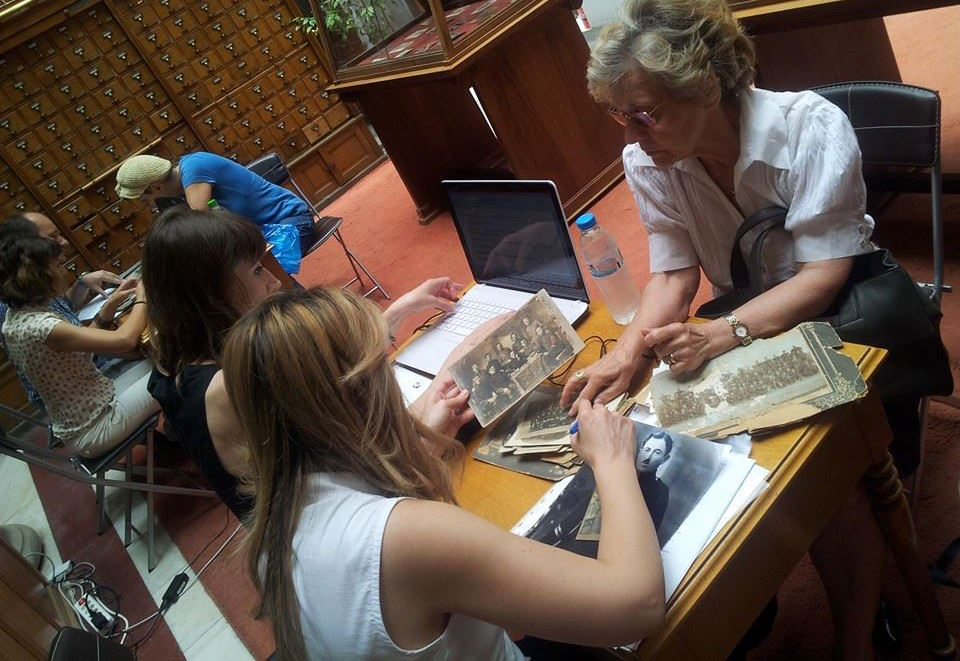a collection event
What is the material collected for?
We arrange a seminar for storytelling
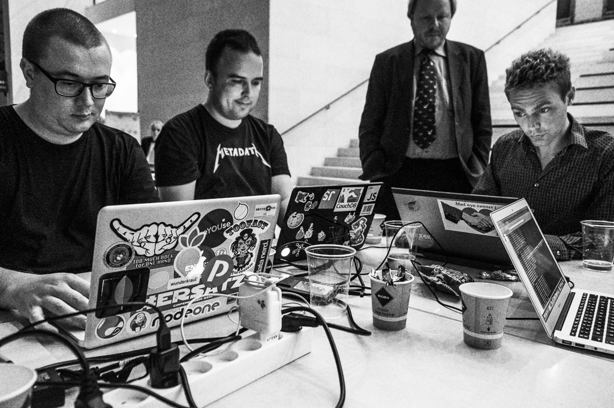a hackathon

and a workshop for experimenting
So we can find out
And where does this material end up?
It must be connected and reused
Wikipedia
Wikimedia Commons
Wikipedia cannot take unnotable material or original research
no small town heroes
no own observation
OpenStreetMap can only accept ground truth
no history
no thematic overlays
We explore different open environments
Platsr.se of the Swedish National Heritage Board
and a novel local wiki
The old map can be used for tracing features on the map
for gradually creating a world map with a time slider
That's already functioning in the Wikimaps environment
Thanks
Documentation and features:commons.wikimedia.org/wiki/Commons:Wikimaps
Blog: wikimaps.wikimedia.fi
Facebook: www.facebook.com/groups/wikimaps/
Jan Ainali, Tim Alder, Michael Andersen, Ole Andersen, John Andersson, Elton Barker, Johanna Berg, Samppa Bernelius, Erlend Bjørtvedt, John Erling Blad, Jerry Clough, André Costa, Simone Cortesi, Maarten Dammers, Vladimir Elistratov, Tom Elliott, Dan Entous, Beat Estermann, David Evans, Sandra Fauconnier, Katie Filbert, Barbara Fischer, Arun Ganesh, Quim Gil, Mark Graham, Andrew Gray, Karl Grossner, Harald Groven, Muki Haklay, Sumana Harihareswara, Derk-Jan Hartman, David Haskiya, Tuukka Hastrup, Dan Michael Olsen Heggø, Chris Helenius, Jaakko Helleranta, Outi Hermans, Vesa Hongisto, Eero Hyvönen, Ari Häyrinen, Leif Isaksen, Lesley Kadish, Jakub Kaniewsky, Kati Katajisto, Tomi Kauppinen, Esa-Pekka Keskitalo, István Kecskeméti, Matt Knutzen, Laura Kolbe, Hay Kranen, Shekhar Krishnan, Tiina Kruup, Heli Laaksonen, Jaak Laineste, Lauri Leht, Jyrki Lehtinen, Eva Lepik, Joonas Loide, Hugo Lopez, Lars Lundqvist, Mikel Maron, Frank Meijer, Gerard Meijssen, Jeff Meyer, Kirsi Mäkinen, Arend Oudman, Jessica Parland-von Essen, Jeph Paul, Petr Pridal, Vahur Puik, Pekka Sarkola, Jaime Lyn Schatz, Rainer Simon, Humphrey Southall, Jon Harald Søby, Henrik Sørensen, Jarosław Tuszyński, Erik Uus, Kaarel Vaidla, Raul Veede, Juha Vilhomaa, Kimmo Virtanen, Denny Vrandečić, Jacob Wang, Rob Warren, Tim Waters, Kathy Weimer, Tove Ørsted ja many others.
.JPG){kind=link}